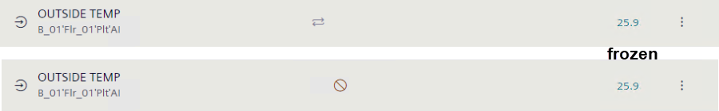
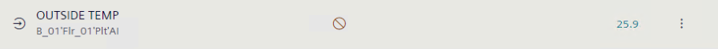

I/O address handling
Although the I/O address field can be written, the change must always be made in ABT Site.
Do not change the I/O address in Web interface
NOTICE

The data point does not change the status

- The data point freezes at status
Normalor current value when the I/O address is changed online in the Web interface.
- The data point can no longer be accessed, and the connection status is .
When making another change, for example, setting the data point to Out of Service, it remains frozen in statusNormalor current value, the connection status changes to and the device must be restarted.
- Change the I/O address offline in ABT Site and download the control program to the device.